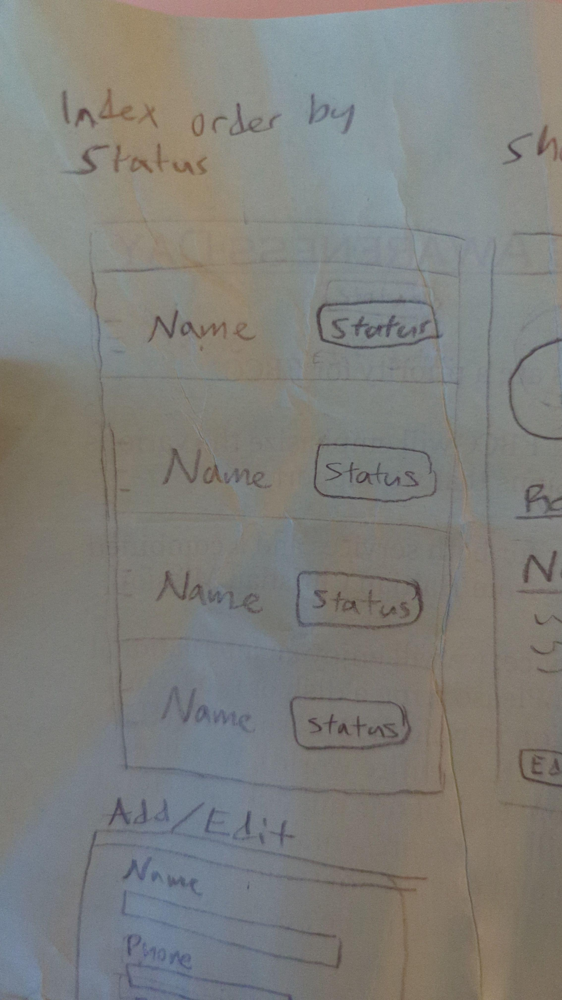
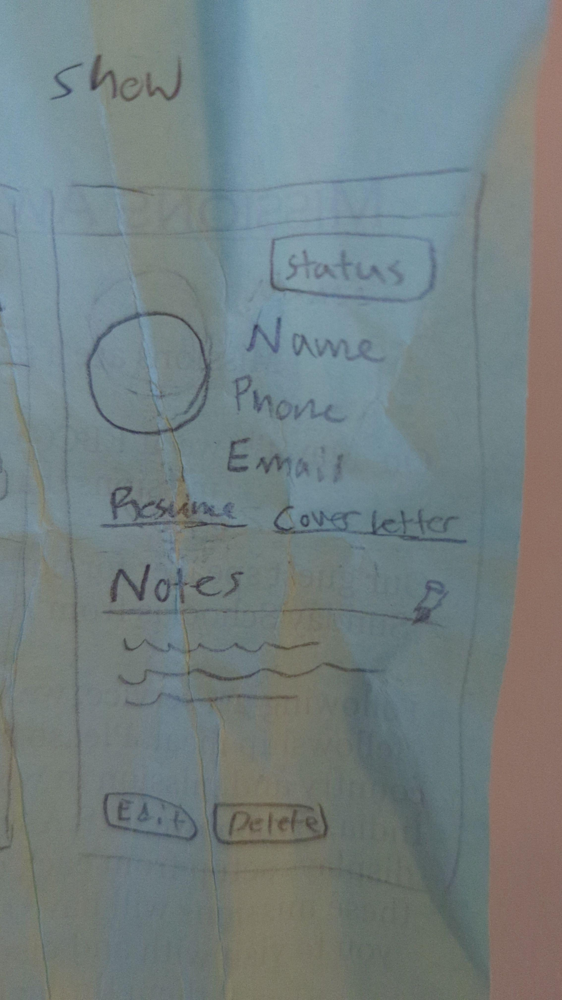
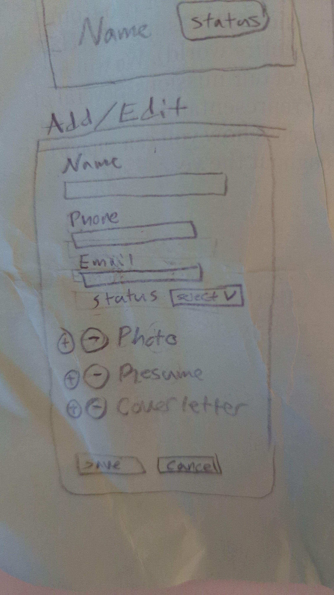

HirePurpose
A Ruby on Rails application for deciding who to hire
Problem Statement
My dream company, 37signals, posted a junior Rails developer position. While I had planned to learn Rails eventually and apply to 37signals in a few years, I was currently focused on .NET at my job. Seeing this position was a wake-up call that motivated me to improve my chances before the application window closed.
Figuring Out What to Build
I knew I needed a Rails project for this job application, even if simple and basic. I wanted to show I was serious. I also wanted to get hands-on experience with Rails to confirm I'd actually enjoy it. Everything I'd read suggested I would, but my only previous brief experience hadn't been positive, and you never truly know until you try.
First Idea
I've wanted to build a proficiency tracker for homeschooling families - something to display state standards by grade level and let parents track their child's progress.
This seemed perfect for Rails, but as I started, I realized I was in over my head. Not that I couldn't build it eventually, but I wouldn't have enough time. I'd already spent days on my cover letter, and the application window was shrinking fast.
Take Two
With less than a week left, I pivoted. After going through the Rails Guide once, I thought about how to use what I knew, build on it slightly, and create something unique.
I decided to build something tailored to the job application itself - a candidate management application. It was:
- Directly relevant to what the 37signals team would be doing
- Simple enough to complete quickly
- Complex enough to learn more about Rails
- A chance to add some personality
User Interface Design
I sketched the app during a meeting (one I didn't need to pay attention to) on the back of a handout.

Index View
The home view of the app where all candidates would be shown.

Show View
The details view of the app where you can see more about each candidate.

New/Edit View
The create/edit view of the app.
I originally planned typical statuses like "reviewing" and "phone interview," based on the job posting's process. But that felt ordinary. Instead, I changed it to reflect how someone might feel about a candidate. The hiring process is far more subjective than we like to admit and I wanted to embrace that.
Since the status is the main utility of the app, it is displayed and editable in three different places. The index view sorts candidates from most to least likely to hire (with "undecided" at the bottom).
I took advantage of Simple.css to give me a solid style base to build on.
For the logo, I used InkScape, found a font I liked, and then manually edited the "i" to look like a tie. Quick, simple, effective.
Resources
During the development of this app I utilized two amazing resources (I used the typical StackOverflow and such as well). Definitely take a look at them if you haven't seen them before.
Technical Challenges
Building this application provided the perfect level of challenge for a project with a one-week timeline. I focused on a single model—candidates—to ensure I could deliver core functionality before the deadline.
Overcoming Initial Resistance
I actually had one previous attempt at learning Rails which had ended in frustration with routing errors, leaving me skeptical about the framework. But I found that using the right learning resources makes all the difference. The official Rails Guide taught in a more concrete manner that helped me understand Rails' convention-over-configuration philosophy, turning what seemed complicated into something elegantly simple. And I had no routing issues this time.
Status Selection
I knew that I wanted statuses to be a set list. Since .NET has enumerables, I decided to see if Rails had something similar. Turns out they do, but much better. Working with enums in Rails was so satisfying—I appreciated how seamlessly they integrated with models and views, making it effortless to rename status options later in development.
Real-time Status Updates
I wanted to make it so that users could update the candidate status from multiple views without requiring a form submission. I wanted a drop-down that would update automatically. The Rails Guide covered displaying data and basic form editing, but not this specific interaction. After searching around online, I implemented a solution using partials with Turbo. This resulted in status updates without page refreshes—a small feature that I viewed as the bedrock of this app.
Deployment Hurdles
Deploying to production presented the most significant challenge. My Windows environment with WSL consistently produced the error "E: Unable to locate package docker-buildx-plugin" despite following the Rails deployment guide. After multiple failed troubleshooting attempts, I borrowed a friend's Linux machine and successfully deployed the application, confirming my suspicion that the issue was Windows-specific.
Outcome
In just 5 days, I went from essentially no Rails knowledge to deploying a functional application with:
- Complete CRUD operations for managing job candidates
- Real-time status updates using Turbo
- Responsive design with dark mode support
- Production deployment on Digital Ocean
For continuing development, I want to work on adding these features:
- User Registration: Complete the authentication process with a registration view.
- Candidate Evaluation Metrics: Add numerical scales for communication, technical, and cultural fit.
- Easier Attachment Access: Allow users to add and delete attachments from show view. Being able to see the file name if something is attached and an option to remove it from the edit screen.
Perhaps most importantly, this project taught me that I love Rails. Regardless of whether I get this position, I will continue to learn and code with it. It was so fun. I know I'm barely getting started with it, but that's half the excitement. I can't wait to see what else I can build with it. I'll definitely be building that proficiency tracker in it here soon.